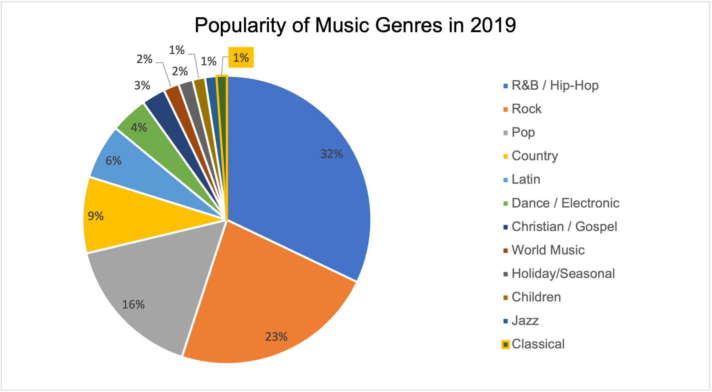

Composers 101
An app that introduces classical music newbies to popular classical composers in each time period.
Context
While some may deem it an archaic art form, classical music is the predecessor
to all modern music forms. For more than a century, however, classical music has been on
the decline, with about 1% of all music consumption in 2019 being classical music. As a
cellist and classical musician, it is my mission to maintain and revive people's
passion for classical music.
As such, I created Composers 101 to inform and teach new classical music listeners about
popular classical composers. Its goal is to provide new listeners with the foundations and basics necessary to
continue to explore classical music.
Research
In starting this project, I initially considered that my primary audience
would be new listeners to classical music. This led me to consider that
the information that my users would be looking for would most likely be
more general facts about composers in general, rather than long and dense biographies
about specific niche composers.
And upon doing a brief search, I found that there was a lack of simple
applications that aimed to introduce users to a wider breadth of composers. Existing
applications had very dense information that wasn't very beginner-friendly, so I sought
to fill this gap.
Design Choices
This is an initial low-fi mockup of the final product:

In choosing this design, I knew that I wanted users to be familiar with the
faces of the composers being presented; faces leave a deeper impression on the user
and allow users to make a mental connection between an image and its corresponding information.
In arranging the photos of the composers, I organized it a little like how an opping shopping gallery
would look like. The rationale behind this: users spend a lot of time browing online stores, so modelling my application
after such a layout might trigger an unconscious habbit to spend more time on composers 101.
Other specific stylistic choices include making the the aggregator on the left sticky so that users could see who
their favorites were at all time and making filter and sort buttons located in an a location analogous to that of online stores.
And after taking these factors into consideration, this is what the final product looked like:

A feature that I implemented after doing my low-fi mockup was offcanvases for composers information. Initially, I wasn't sure how to best convey general information about composers, but something that was easily accessible, but also cancelable, was most desireable. Offcanvases fit that profile.
Conclusions
This project gave me a lot of insight into working with React and APIs. I learned how to
integrate JS code with user states and queries, and these gave me the ability to make a much
more interactive application as a whole. For APIs, I used OpenOpus to source all of the foundational
information upon which I built my data, and working with this API gave me a lot of insight into how to
pull information from large collections of data.
If I were to do things differently, I would want to include a more diverse selection of
composers to include composers who come from underrepresented backgrounds. In addition, I would
change my aggregator display to disallow duplicate composers. Overall, however, this project was very
enjoyable to work on since this is a cause that I am so deeply passionate about.